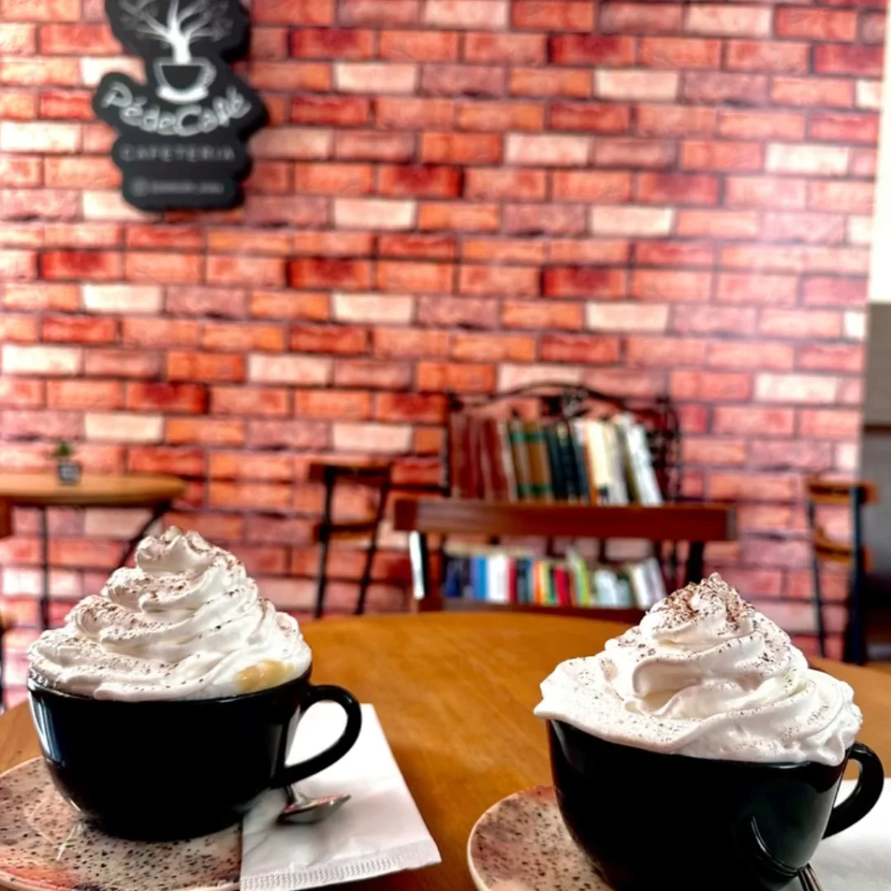
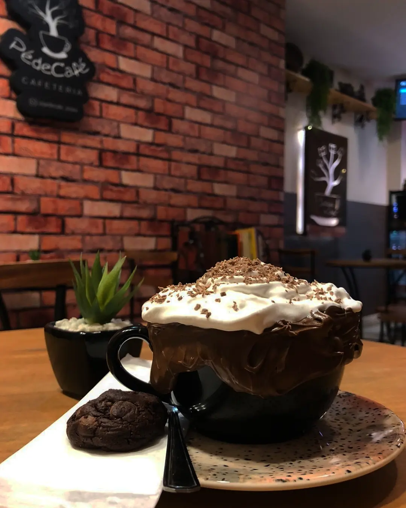
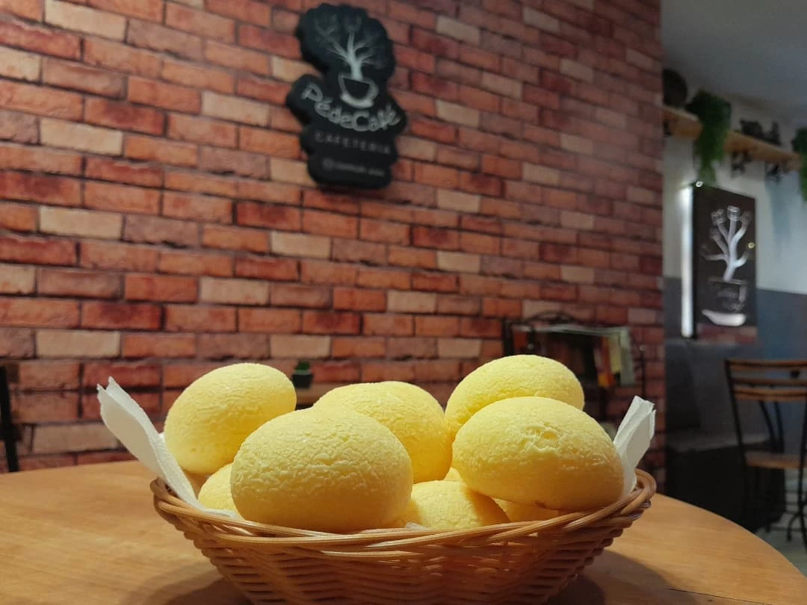
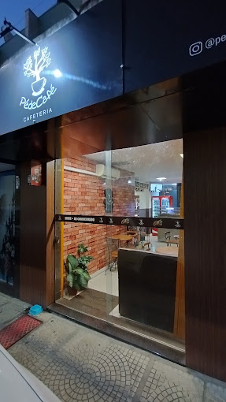
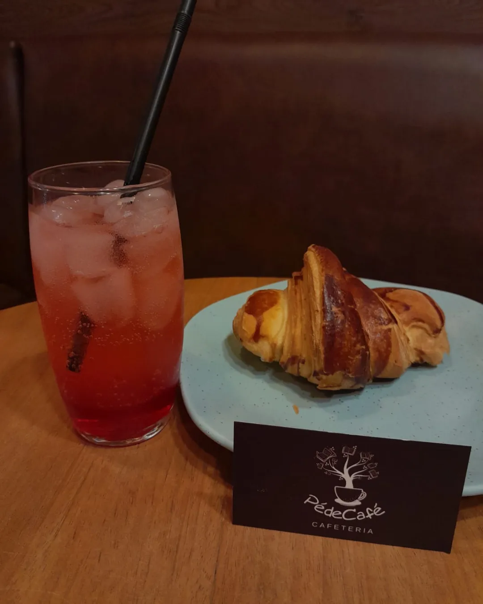

Cappuccino
Quentinho, com chantilly e vontade de ficar.

Vamos tomar um café? ↗Tem cappuccino, pão de queijo, croissant.
E uma mesa esperando por você no Centro de Araxá.



No Pé de Café, uma conversa combina com cappuccino, e o café da tarde pode vir com pão de queijo, bolo ou um croissant douradinho.
Aqui no Centro de Araxá, tem espaço para encontrar os amigos, abrir um livro ou fazer uma pausa por conta própria. Escolha seu pedido e fique à vontade.
Conheça o nosso cantinho ↗
Coloque uma pausa boa no seu caminho.
Rua Ângela Marquês Tôrres, 48 A
Centro · Araxá, Minas Gerais
Confirme os horários e as opções do dia
diretamente com a nossa equipe.